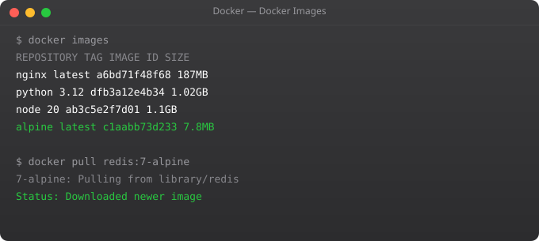

In Part 1 we understood why Docker exists and what problem it solves. Now we get hands-on. We will install Docker, understand its architecture, and run our first real containers. By the end of this part, you will have a working Docker setup and understand what actually happens when you type docker run.
This is the most common setup for developers and cloud servers. Follow these steps carefully:
# Remove old versions first
sudo apt remove docker docker-engine docker.io containerd runc
# Update and install dependencies
sudo apt update
sudo apt install ca-certificates curl gnupg lsb-release
# Add Docker's official GPG key
sudo mkdir -p /etc/apt/keyrings
curl -fsSL https://download.docker.com/linux/ubuntu/gpg | sudo gpg --dearmor -o /etc/apt/keyrings/docker.gpg
# Add Docker repository
echo "deb [arch=$(dpkg --print-architecture) signed-by=/etc/apt/keyrings/docker.gpg] https://download.docker.com/linux/ubuntu $(lsb_release -cs) stable" | sudo tee /etc/apt/sources.list.d/docker.list > /dev/null
# Install Docker Engine
sudo apt update
sudo apt install docker-ce docker-ce-cli containerd.io docker-compose-plugin
# Start Docker and enable on boot
sudo systemctl start docker
sudo systemctl enable docker
# Run Docker without sudo (important!)
sudo usermod -aG docker $USER
newgrp dockerDownload Docker Desktop from the official Docker website. Docker Desktop for Windows includes everything you need: Docker Engine, Docker CLI, Docker Compose, and a visual dashboard. It requires Windows 10 or 11 with WSL2 (Windows Subsystem for Linux) enabled. During installation, Docker will ask you to install WSL2 if it is not already set up — follow the prompts and it will guide you through.
After installation, Docker Desktop runs in the system tray. You can interact with Docker via PowerShell or Command Prompt using the same commands you would use on Linux.
Download Docker Desktop for Mac from the official Docker website. There are two versions — one for Intel chips and one for Apple Silicon (M1, M2, M3). Make sure you download the right one for your machine. After installation, Docker Desktop gives you a menu bar icon and a dashboard to manage containers visually.
After installing, verify that Docker is working correctly:
docker --version
docker infoIf you see version information, Docker is installed. Now run the classic test container:
docker run hello-worldThis command pulls a tiny test image from Docker Hub and runs it. You will see a message confirming that Docker is working correctly. Let us understand exactly what happened here:
hello-world image exists locallyThese are the commands you will use constantly. Do not just read them — run each one and observe the output.
# Pull an image from Docker Hub
docker pull ubuntu
# List downloaded images
docker images
# Run a container (interactive mode)
docker run -it ubuntu bash
# List running containers
docker ps
# List all containers (including stopped)
docker ps -a
# Stop a running container
docker stop <container_id>
# Remove a container
docker rm <container_id>
# Remove an image
docker rmi ubuntuLet us run something more meaningful — an Nginx web server inside a container:
docker run -d -p 8080:80 --name my-web nginxBreaking down this command:
-d — run in detached mode (background)-p 8080:80 — map port 8080 on your machine to port 80 inside the container--name my-web — give the container a readable namenginx — use the official Nginx imageOpen your browser and go to http://localhost:8080. You will see the Nginx welcome page. A full web server running inside a container — no installation required on your host machine.
A Docker container goes through specific states: created, running, stopped, and removed. Understanding this lifecycle is important because containers are meant to be disposable. You can stop them, delete them, and create new ones from the same image in seconds. The image stays — only the container instance is deleted when you run docker rm.
This is fundamentally different from a virtual machine. A VM takes minutes to start. A container takes milliseconds. A VM has its own full OS. A container shares the host OS kernel. This is why containers are so powerful for modern development and deployment workflows.
When a container runs in the background, how do you know what it is doing? Docker captures all output from the container process and stores it as logs.
# View logs of a container
docker logs my-web
# Follow logs in real time
docker logs -f my-webThis is your window into what is happening inside a running container. In production systems, log monitoring is critical — Docker's logging system makes it straightforward.
Sometimes you need to get inside a container and look around or troubleshoot. Use this command:
docker exec -it my-web bashThis opens a bash shell inside the running Nginx container. You can browse the filesystem, check configuration files, and run commands just as you would on a regular Linux server. Type exit to leave the container without stopping it.
Containers and images accumulate quickly and take up disk space. Keep your Docker environment clean:
# Remove all stopped containers
docker container prune
# Remove unused images
docker image prune
# Remove everything unused (containers, networks, images)
docker system pruneIn Part 3, we will learn to write our own Dockerfile and build custom images — this is where Docker becomes truly powerful for real projects.